Activity: Positioning assembly parts using the Connect relationship
Activity
In this activity you will use the Connect relationship to position a part. The faces of the parts have draft angles and because of this the Connect relationship will need to be used rather than the Planar Align relationship.
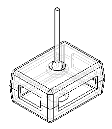
Click here to download the parts and assembly files for the activity.
Overview
The objective of this activity is to position a part in an assembly using the Connect relationship.
Open Connect.asm and activate all the parts.
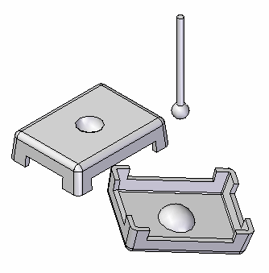
Choose File tab→Settings→Options.
Select Assembly.
Select the Do not create new window when placing component check box.
Use the Connect relationship to position the lid. Position the lid by connecting three of the corner arc centers together. This will completely position the lid.
The Connect relationship recognizes key topological features to position parts. Like the Axial Align option, linear edges can be connected. Endpoints and midpoints of linear elements are valid for connecting, as well as arc and circle centers.
Set the display to Visible and Hidden Edges
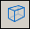
. By exposing the hidden edges, it is easier to locate the desired connection geometry.Click the Select command, and then select the lid shown.
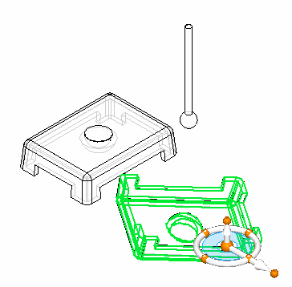
To position the part, click the Edit Definition
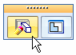
button.Set the relationship type to Connect
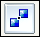
.Select the point on the arc center of the lid as shown.
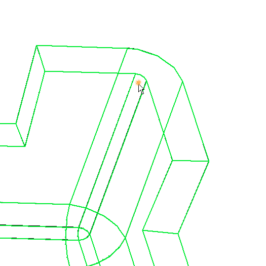
Select the corner of the other lid shown as the target point for the first relationship.
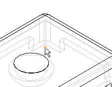
Repeat these steps for any two of the remaining three corners. The lid is then completely positioned.
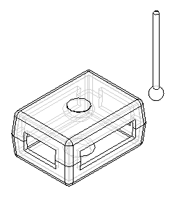
Position the center of the sphere on the knob to the center of the half sphere depression in the lid. This shows how spherical faces can be positioned using the Connect relationship.
Click the Select Tool and select the knob. Then click the Edit Definition command as shown.
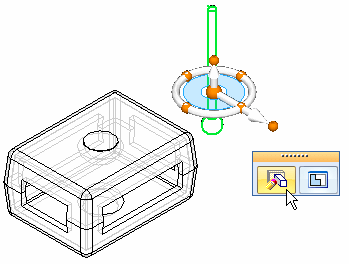
Set the relationship type to Connect .
Pause over the sphere and click when the centerpoint symbol appears.
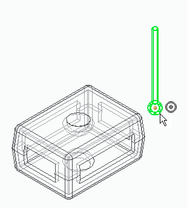
Pause over the semisphere face and click when the centerpoint symbol appears.
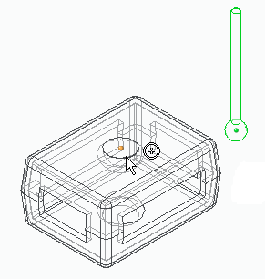
The center of the sphere on the knob is now connected to the center of the spherical depression on the face. The knob has freedom to pivot about this point. Other relationships, such as Mate with a floating offset can be used to exactly position the knob.
As an optional step in this activity, use the Mate relationship to completely position the knob as shown. You may also want to use the parts reference planes to help position the knob. Close the assembly without saving. This completes the activity.
In this activity you learned to use the Connect relationship to position a lid using points, and to position a knob by connecting sphere centers together.
This activity is complete.
-
Click the Close button in the upper-right corner of the activity window.